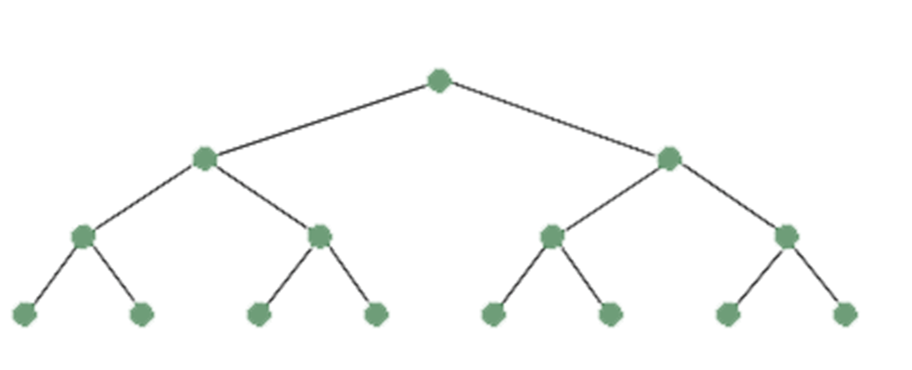

INTRODUCTION TO TREES
INTRODUCTION TO TREES
✈ Tree is a discrete structure that represents hierarchical relationships between individual elements or nodes. A tree in which a parent has no more than two children is called a binary tree.
✈ A tree is a collection of nodes (dots) called a graph with connecting edges (lines) between the nodes. All nodes are connected by lines.
✈ A Tree is a connected acyclic undirected graph. There is a unique path between every pair of vertices in G. A tree with N number of vertices contains (N−1) number of edges. The vertex which is of 0 degree is called root of the tree. The vertex which is of 1 degree is called leaf node of the tree and the degree of an internal node is at least 2.
PROPERTIES OF TREES
1. There is only one path between each pair of vertices of a tree.
2. If a graph G there is one and only one path between each pair of vertices G is a tree.
3. A tree T with n vertices has n-1 edges.
4. A graph is a tree if and only if it a minimal connected.